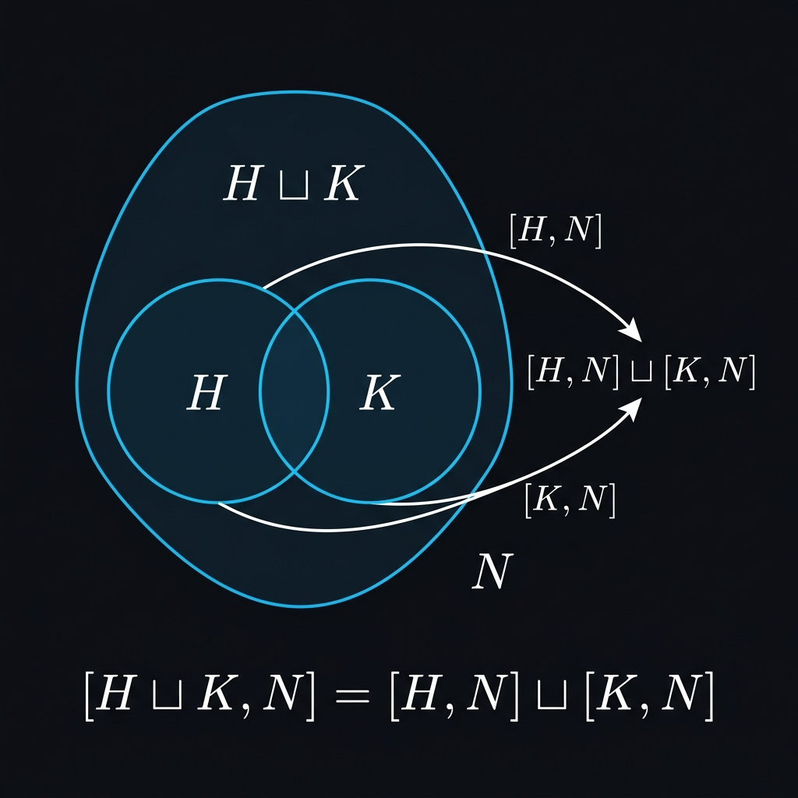

Commutator Supremum Distributivity

Mathematical Exposition
In group theory, the commutator subgroup of two subgroups $H$ and $K$ of a group $G$, denoted by $[H, K]$, is the subgroup generated by all commutator elements $[h, k] = hkh^{-1}k^{-1}$ for $h \in H$ and $k \in K$. The supremum or join $H \sqcup K$ is the subgroup generated by their union $H \cup K$, consisting of finite products of elements from $H$ and $K$.
This theorem establishes that when one of the subgroups ($N$) is normal in $G$, the commutator operator distributes over the supremum (join) operation:
$$ [H \sqcup K, N] = [H, N] \sqcup [K, N] $$Proof Structure
The proof establishes the equality by proving containment in both directions:
1. Easy Containment ($\supseteq$): Since $H \le H \sqcup K$ and $K \le H \sqcup K$, we have by monotonicity of commutators that $[H, N] \le [H \sqcup K, N]$ and $[K, N] \le [H \sqcup K, N]$. Taking the supremum of both sides yields the inclusion $[H, N] \sqcup [K, N] \le [H \sqcup K, N]$.
2. Distributivity Containment ($\subseteq$): Let $M = [H, N] \sqcup [K, N]$. We show that $[H \sqcup K, N] \le M$ by demonstrating that $H \sqcup K$ lies in the normalizer of $M$, and that every generator $x \in H \sqcup K$ satisfies $[x, n] \in M$ for all $n \in N$. We then use the subgroup closure induction principle on $x$:
- Base case (membership): If $x \in H$, then $[x, n] \in [H, N] \le M$. Similarly for $x \in K$.
- Induction step (multiplication): For a product of two elements $x, y$, we apply the commutator product identity: $$ [xy, z] = x [y, z] x^{-1} \cdot [x, z] $$ Since $x$ normalizes $M$, the conjugated term $x [y, z] x^{-1}$ lies in $M$ if $[y, z]$ does. Since $[x, z] \in M$ by induction, their product lies in $M$.
- Induction step (inverses): For $x^{-1}$, we use the inverse identity: $$ [x^{-1}, z] = x^{-1} [x, z]^{-1} x $$ which similarly remains in $M$ since $x^{-1}$ normalizes $M$.
This shows that the commutator of the join is bounded by the join of the individual commutators, completing the proof.
open Subgroup Function MulOpposite Set
/-! ### Commutator element identities -/
/-- The commutator of a product: `⁅x * y, z⁆ = x * ⁅y, z⁆ * x⁻¹ * ⁅x, z⁆`. -/
lemma commutatorElement_mul' {G : Type*} [Group G] (x y z : G) :
⁅x * y, z⁆ = x * ⁅y, z⁆ * x⁻¹ * ⁅x, z⁆ := by
simp [commutatorElement_def]; group
/-- The commutator of an inverse: `⁅x⁻¹, z⁆ = x⁻¹ * ⁅x, z⁆⁻¹ * x`. -/
lemma commutatorElement_inv' {G : Type*} [Group G] (x z : G) :
⁅x⁻¹, z⁆ = x⁻¹ * ⁅x, z⁆⁻¹ * x := by
simp [commutatorElement_def]; group
/-! ### Normalizer lemma for commutator proofs -/
private lemma le_normalizer_of_commutator_le {G : Type*} [Group G] (H N M : Subgroup G) (h1 : M ≤ N) (h2 : ⁅H, N⁆ ≤ M) : H ≤ M.normalizer := by
intro h hh; rw [Subgroup.mem_normalizer_iff]; intro m; constructor
· intro hm
have : h * m * h⁻¹ = ⁅h, m⁆ * m := by simp [commutatorElement_def]
exact this.symm ▸ Subgroup.mul_mem M (h2 (Subgroup.commutator_mem_commutator hh (h1 hm))) hm
· intro hm
have : m = ⁅h⁻¹, h * m * h⁻¹⁆ * (h * m * h⁻¹) := by simp [commutatorElement_def]; group
exact this.symm ▸ Subgroup.mul_mem M (h2 (Subgroup.commutator_mem_commutator (Subgroup.inv_mem H hh) (h1 hm))) hm
/-! ### Commutator distributivity over joins -/
/-- The commutator of a binary join with a normal subgroup distributes:
`⁅H ⊔ K, N⁆ = ⁅H, N⁆ ⊔ ⁅K, N⁆`. The key technique is showing that generators of `H ⊔ K`
land in the normalizer of the target, then using `closure_induction`. -/
theorem Subgroup.commutator_sup_eq_of_normal {G : Type*} [Group G] (N : Subgroup G) [N.Normal] (H K : Subgroup G) :
⁅H ⊔ K, N⁆ = ⁅H, N⁆ ⊔ ⁅K, N⁆ := by
apply le_antisymm
· set M := ⁅H, N⁆ ⊔ ⁅K, N⁆
have hMN : M ≤ N := sup_le (Subgroup.commutator_le_right H N) (Subgroup.commutator_le_right K N)
have hHKNorm : Subgroup.closure ((H : Set G) ∪ K) ≤ M.normalizer := by
rw [← Subgroup.sup_eq_closure]
exact sup_le (le_normalizer_of_commutator_le H N M hMN le_sup_left) (le_normalizer_of_commutator_le K N M hMN le_sup_right)
rw [Subgroup.sup_eq_closure, Subgroup.commutator_le]
intro x hx n hn
induction hx using Subgroup.closure_induction with
| mem x hx =>
rcases hx with hH | hK
· exact (le_sup_left : ⁅H, N⁆ ≤ M) (Subgroup.commutator_le.mp le_rfl x hH n hn)
· exact (le_sup_right : ⁅K, N⁆ ≤ M) (Subgroup.commutator_le.mp le_rfl x hK n hn)
| one => simp [Subgroup.one_mem]
| mul x y hx_mem _ IHx IHy =>
rw [commutatorElement_mul']
exact Subgroup.mul_mem M ((Subgroup.mem_normalizer_iff.mp (hHKNorm hx_mem) ⁅y, n⁆).mp IHy) IHx
| inv x hx_mem IHx =>
rw [commutatorElement_inv']
have eq : x⁻¹ * ⁅x, n⁆⁻¹ * x = x⁻¹ * ⁅x, n⁆⁻¹ * x⁻¹⁻¹ := by group
exact eq.symm ▸ (Subgroup.mem_normalizer_iff.mp (Subgroup.inv_mem _ (hHKNorm hx_mem)) ⁅x, n⁆⁻¹).mp (Subgroup.inv_mem M IHx)
· exact sup_le (Subgroup.commutator_mono le_sup_left le_rfl) (Subgroup.commutator_mono le_sup_right le_rfl)
/-- The commutator distributes over arbitrary suprema when one factor is normal:
`⁅⨆ i, f i, N⁆ = ⨆ i, ⁅f i, N⁆`. Generalises `Subgroup.commutator_sup_eq_of_normal`
to arbitrary index types. -/
theorem Subgroup.commutator_iSup_eq_of_normal {G : Type*} [Group G] (N : Subgroup G) [N.Normal]
{ι : Sort*} (f : ι → Subgroup G) : ⁅⨆ i, f i, N⁆ = ⨆ i, ⁅f i, N⁆ := by
refine le_antisymm ?_ (iSup_le fun i ↦ commutator_mono (le_iSup f i) le_rfl)
set M := ⨆ i, ⁅f i, N⁆
have hMN : M ≤ N := iSup_le fun i ↦ commutator_le_right (f i) N
have hNorm : closure (⋃ i, (f i : Set G)) ≤ M.normalizer := by
rw [← iSup_eq_closure]
exact iSup_le fun i h hh ↦ mem_normalizer_iff.mpr fun m ↦
⟨fun hm ↦ (show h * m * h⁻¹ = ⁅h, m⁆ * m by simp [commutatorElement_def]) ▸
mul_mem (le_iSup (⁅f ·, N⁆) i (commutator_mem_commutator hh (hMN hm))) hm,
fun hm ↦ (show m = ⁅h⁻¹, h * m * h⁻¹⁆ * (h * m * h⁻¹) by
simp [commutatorElement_def]; group) ▸
mul_mem (le_iSup (⁅f ·, N⁆) i (commutator_mem_commutator (inv_mem hh) (hMN hm))) hm⟩
rw [iSup_eq_closure, commutator_le]
intro x hx n hn
induction hx using closure_induction with
| mem x hx =>
obtain ⟨i, hi⟩ := Set.mem_iUnion.mp hx
exact le_iSup (⁅f ·, N⁆) i (commutator_mem_commutator hi hn)
| one => simpa [commutatorElement_def] using M.one_mem
| mul x y hx_mem _ IHx IHy =>
rw [commutatorElement_mul']
exact mul_mem ((mem_normalizer_iff.mp (hNorm hx_mem) _).mp IHy) IHx
| inv x hx_mem IHx =>
rw [commutatorElement_inv', show x⁻¹ * ⁅x, n⁆⁻¹ * x = x⁻¹ * ⁅x, n⁆⁻¹ * x⁻¹⁻¹ from by group]
exact (mem_normalizer_iff.mp (inv_mem (hNorm hx_mem)) _).mp (inv_mem IHx)